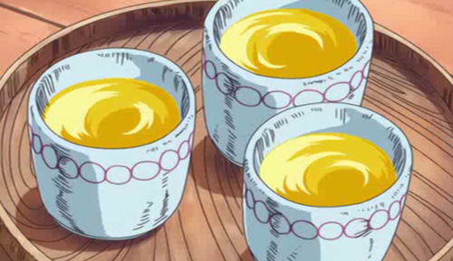

Gan fall’s pumpkin juice

Description
A milky pumpkin drink.
Ingredients
- Approximately ¼ of a Pumpkin (300g/10oz.)
- Water (300ml/10oz.)
- Honey (2 Tablespoons [Metric]/1.5 Tablespoons [Imperial])
-
Granulated Sugar (Your preference, recommended amount is the same as
honey)
- Cow’s Milk (Your preference) [See Below]
Steps
-
Remove the pumpkin seeds and skin, and cut the fruit into about 1cm
thick cubes. Place fruit into a small pot, add water and place the lid
on the pot. Cook over a medium flame. Turn off the flame once the
pumpkin has turned soft.
-
Place the fruit in a blender, together with the honey and the sugar.
Blend till smooth, cool in the refrigerator.
-
Pour the cooled juice into glasses, and add the amount of milk you want.
Stir and serve chilled. It is also delicious served hot. (However avoid
serving lukewarm.)